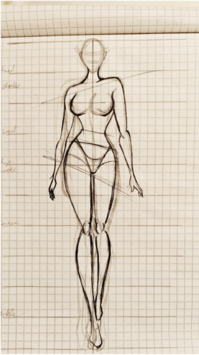
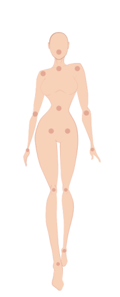

1. Motion Design (Adobe After Effects)
A series of short-form animations exploring timing, transitions, and visual storytelling to create engaging motion-based content.
Exploring motion, interaction, and content creation across platforms to expand visual communication and engagement
A series of short-form animations exploring timing, transitions, and visual storytelling to create engaging motion-based content.





A lightweight interactive tool designed to explore user input, layout responsiveness, and dynamic content generation in a playful format.
View Meme Generator


A collection of social media designs created to explore visual consistency, content structure, and audience engagement through short-form content. Designbound Instagram